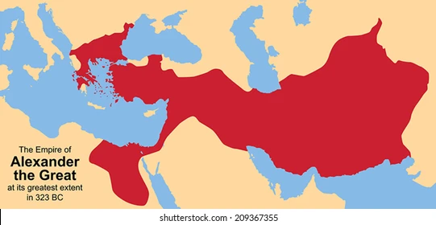

Alexander der Grosse
Kindheit und Jugend
Alexander der III. von Makedonien war am 20. Juli 356 v. Chr. in Pella[1] geboren. Er war Sohn von Philipp der II. von Makedonien und Olympias von Epirus. Der junge Alexander war oft Führer der Makedonischen Armee, wenn sein Vater sich auf Feldzügen begab[2],
damit hatte er auch viel militärische Erfahrung. Eine weltbekannte Geschichte von seiner Kindheit ist die Zähmung von Bukephalos. Nach Plutarch hat er mit 10 oder 12 Jahre Bukephalos bekommen[3],
nachdem er erkannt hatte, dass das Pferd sich vor seinen eigenen Schatten Angst hatte. Nachdem Alexander das sogenannte unzähmbare Pferd gezähmt hatte, soll Philipp zu ihm gesagt haben: «O mein Sohn, suche dir ein Königreich, das dir gleich
und würdig ist, denn Makedonien ist dir zu klein»[4] Als Alexander 13 Jahre alt, vor wurde, von der berühmten griechischen Philosoph Aristoteles gelehrt. Durch ihn entwickelte Alexander ein Interesse für Forschung und Wissenschaft.
Teil der Alexandermosaik welches Alexander dem Grossen zeigt
Alexandermosaik: Zeigt Schlacht von Issus, gefunden im Casa del Fauno
Eine römische Münze auf dem Olympias, Alexanders Mutter, abgebildet ist
Thronfolge
Philipp wurde 336 v. Chr. in Aegae, der alten Hauptstadt Makedoniens, ermordet.[5] Er war dort, um eine Hochzeit zu feiern. «Während der König das Theater der Stadt betrat, war er schutzlos, um den Anwesenden gegenüber freundlich zu erscheinen»[6] Pausanias von Orestis, einer seiner sieben Leibwächter, kam und erstach ihn. «Nachdem Philip getötet wurde, versuchte der Attentäter sofort zu fliehen und seine Fluchtpartner zu erreichen, die mit Pferden am Eingang von Aegae auf ihn warteten.
Der Attentäter wurde von drei anderen Leibwächtern von Philip verfolgt, und während der Verfolgungsjagd stolperte er versehentlich über einen Weinstock»[7] Anschliessend wurde er von den Leibwächtern auch erstochen.[8] Es gibt Gerüchte, dass Alexander und/oder seine Mutter Pausanias benutzten, um den Thron zu besteigen,
aber es gibt keine konkreten Beweise. Alexander, um seine Macht zu festlegen, liess alle Thronkandidaten zu töten, die versucht haben könnten, König zu werden. Ein paar Monate nachdem er König wurde, ging er auf einen Feldzug im Balkan, um
alle rebellierenden Stämme unterzuwerfen.[9] Der Feldzug war erfolgreich und Alexander konnte sich nun den Persern stellen, denn seine Macht in Makedonien
war nun unbestritten.
Eine Karte welches Makedonien unter Philip II zeigt
Pausanias tötet Philip II
Die Perser
Persien galt als eine der ersten wahren Supermächte der Geschichte. Ein bisschen wie die Vereinigten Staaten heute. Es erstreckte sich von Indien über Ägypten bis nach Griechenland. Und nachdem es Alexander gelungen war, seine Macht in Makedonien
zu festigen, unternahm er eine 11-jährige Eroberung, um dieses riesige Reich zu erobern.[10] Aber es sei darauf hingewiesen, dass es Alexanders Vater, Philipp II., war, der Makedoniens Armee von einer als barbarisch angesehenen Armee zu einer der gefürchtetsten Kampfmaschinen jener Zeit machte.[11] Philip hatte seine eigenen Pläne, Persien zu erobern, aber kurz nachdem er den Hellespont in persisches Gebiet überquert hatte, wurde er ermordet. Damit war der junge Alexander für den Kampf gegen die Perser verantwortlich. Er war 50 Mal in
der Unterzahl. «Aber es gab auch Anzeichen dafür, dass das persische Reich bereits im Niedergang war»[12] Nachdem sie einige demütigende Niederlagen erlitten hatten, hörten sie auf zu expandieren. Darüber hinaus erlebte es während des Jahrhunderts vor Alexanders Herrschaft einen Bürgerkrieg. Nichtsdestotrotz waren die Perser mehr und Alexander
sollte getestet werden, ob er ein würdiger Nachfolger von Philip ist.

Teil der Alexandermosaik welches Dareios III zeigt

Eine Karte des persischen Reiches zur Zeit von Dareios III
Issos und Gaugamela
An der Küstenstadt von Issos trafen sich die beiden Armeen.[13] Die Perser waren wie gedacht, in der Überzahl. Aber sie wählten einen schlechten Ort für den Kampf. Obwohl Darius’ Armee viel grösser war als die von Alexander, wählte er einen schlechten Ort für den Kampf, der schliesslich ein schmaler Landstreifen
zwischen einem Bergrücken und dem Meer war, der seinen Zahlenvorteil neutralisierte. Als es klar wurde, dass Darius am Verlieren war, floh er[14] und liess seine Mutter und Frau mit der Armee zurück. Alexander aber, respektierte Sisigambis (Dareios’ Mutter) auch wenn er sie einfach töten lassen konnte und nannte sie auch «Mutter»[15] Die beiden Armeen würden sich erst in zwei Jahren treffen. Darius rief Verstärkung aus dem Osten an und Alexander ging auf eine Eroberungsreise nach Ägypten, wo er zum Pharao ausgerufen wurde und Titel wie „Sohn des Ra“ oder „Geliebter des
Amun“ erhielt.[16] Darius wollte
die Schlacht so lange wie möglich hinauszögern, kam dann aber zu dem Schluss, dass es ein unvermeidlicher Kampf war. Er entschied sich für einen Standort in der Nähe der Stadt Gaugamela[17] (Schlacht von Gaugamela wird in manchen Quellen als Schlacht von Arbela genannt), einem breiten flachen Tal, das es ihnen ermöglichen würde, ihre Zahlen gegen Alexander einzusetzen. Es wird gesagt, dass er den Boden sogar noch weiter ebnete,
damit seine Streitwagen hindurchfahren konnten. Aber Alexander erlaubte ihm nicht, ihn auszutricksen. Er lagerte die makedonische Armee in den Hügeln über dem Schlachtfeld, um aufzutanken und sich auszuruhen[18] , während er einen Plan entwarf. Die Perser, die einen Nachtangriff befürchteten, blieben die ganze Nacht in bereiter Formation und warteten gespannt auf einen Angriff, der nie kam. Dann schliesslich, im Morgengrauen, schlugen die Makedonier
zu.
[19] Er bewegte seine gesamte
Armee zuerst nach rechts, und als Darius antwortete, bewegte er sie schnell wieder nach links und überholte die persische Armee. Denken Sie daran, Alexander hatte 50.000 Leute, Darius hatte fünfmal so viel, also war es schwieriger, schnell
zu reagieren. Darius floh zu Pferd, wurde aber später von seinem eigenen Cousin ermordet.[20] Der Cousin übergab später Darius’ Kopf als Tribut an Alexander und hoffte wahrscheinlich auch, dass er sein Leben verschonen würde. Verblüfft von der verräterischen Tat ließ er den Mann foltern und hinrichten, bevor er sich selbst zum unbestrittenen
König von Makedonien, Griechenland und Persien erklärte.
Alexanders Name in Hieroglyphen geschrieben
Rückkehr und Tod
Alexander übernahm dann weiterhin das gesamte persische Reich bis zum Ganges. Zu diesem Zeitpunkt waren die Soldaten müde und erschöpft, sie drohten mit Meuterei und Alexander gehorchte.[21] Und so war Alexander nach 11 Jahren Eroberung auf dem Weg zurück nach Griechenland. Aber plötzlich um 323 v. Chr. starb er in Babylon. Nach der Universität von Maryland starb er wahrscheinlich von Typhus-Fieber.[22] Nachdem die Makedonier von seinem Tod erfuhren, konnten sie es nicht glauben. Die persischen Untertanen mussten ihre Haare abschneiden lassen. Und Sisigambis, Alexanders «zweite Mutter» war so trauergeplagt, dass sie in eine Depression verfiel
und sich umbrachte.[23] Nach Diodorus wollte Alexander das ganze Mittelmeer einnehmen und sogar eine Strasse nach Gibraltar bauen (zurzeit «Säulen des Herakles» genannt). Seine Pläne waren, gelinde gesagt, ehrgeizig, wahrscheinlich der Grund, warum seine Nachfolger
sie aufgegeben haben.[24]

Alexanders Reich, als es am grössten war

Ein babylonischer Steintafel, welches der Tod Alexanders festhält
Untergang des Imperiums
Alexanders Tod kam plötzlich. Und weil er keine lebenden männlichen Erben hatte, bevor er starb und jeden tötete, der möglicherweise Anspruch auf den Thron erheben konnte, wurde sein Reich zerstört und zwischen seinen Generälen aufgeteilt. Er hatte keinen
offensichtlichen oder legitimen Erben und sogar sein Sohn Alexander IV wurde erst nach seinem Tod geboren. Auf seinem Sterbebett wurde Alexander von seinen Gefährten befragt, wem er die Macht über sein Königreich geben würde, und angeblich
antwortete er mit „toi kratistoi“, was „den Stärksten“[25] bedeutet. Zunächst wurden Alexander IV. und der Halbbruder von Alexander dem Großen, Philipp III., zu Königen ernannt, aber bald begannen die Satrapien, sich gegenseitig zu bekämpfen, und es endete mit vier getrennten Königreichen: ptolemäisches
Ägypten, seleukidisches Mesopotamien, attalidisches Anatolien und antagonidisches Mazedonien. Bei der Teilung des Reiches wurden Alexander IV. und Philipp III. getötet.
Die vier Reiche nach Alexander